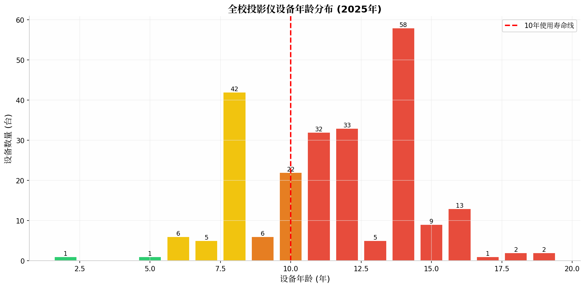
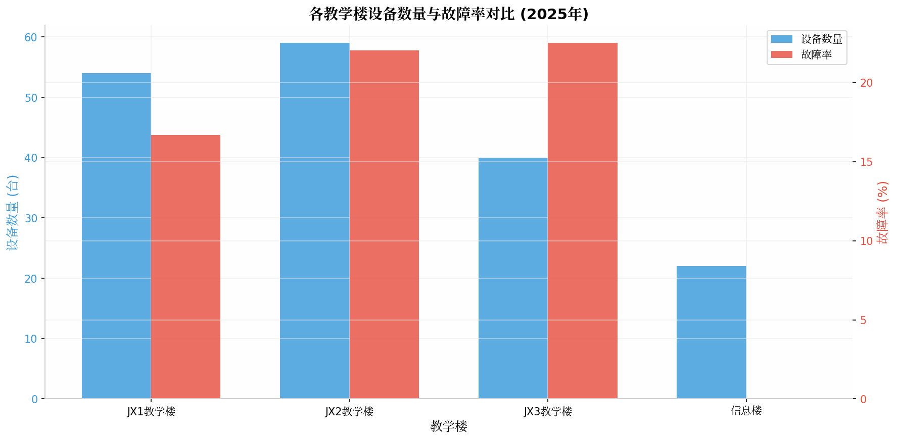
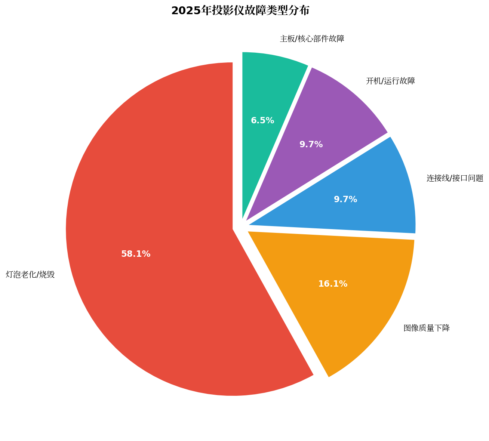
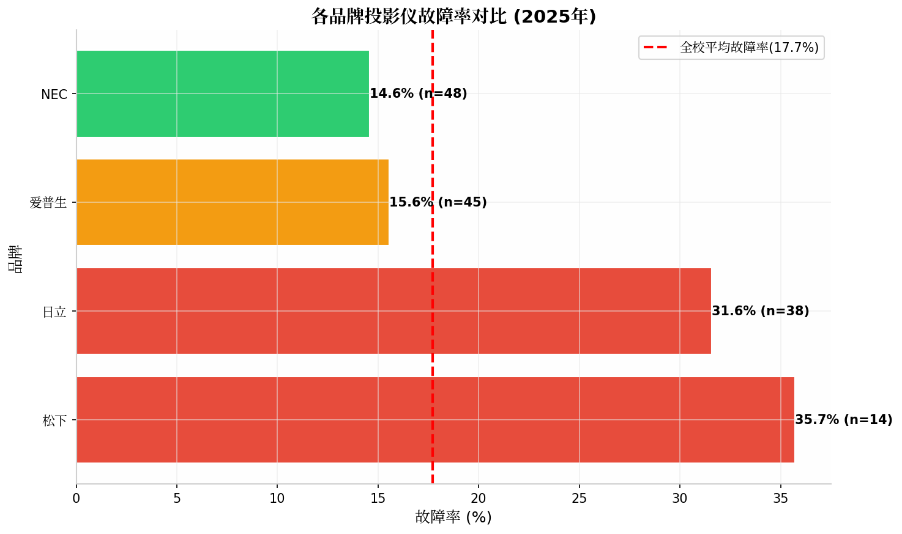
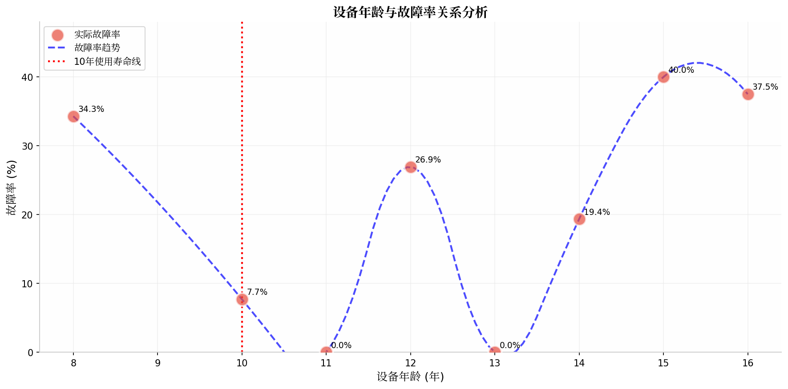
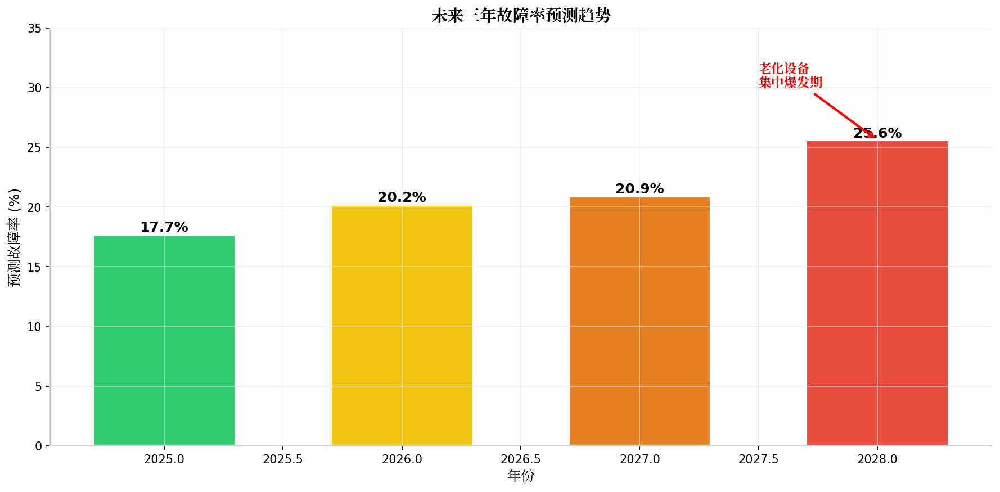
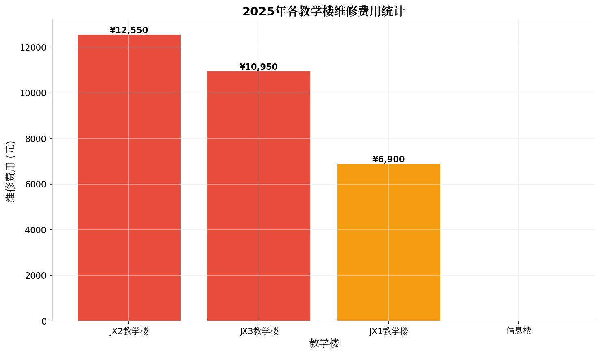
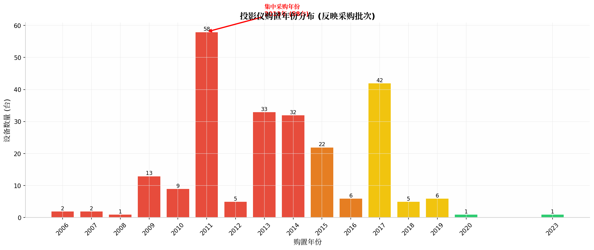

核心发现摘要
全校238台教学投影仪中，平均设备年龄达11.5年，超过10年使用寿命的设备占比65.1%，设备老化问题严峻。2025年故障率达17.7%。若不加强维护投入，预计2028年故障率将攀升至25.6%，教学保障风险显著增加。
一、设备现状全景画像
1.1 设备总量与分布
截至2025年，全校共有教学投影仪238台，分布在4栋主要教学楼及办公、实训等场所。其中JX1教学楼76台、JX2教学楼75台、JX3教学楼48台、信息楼15台，四栋教学楼合计214台，占总量的89.9%。

1.2 设备年龄结构分析
设备年龄结构呈现严重老龄化特征：
- 超期服役（10年以上）：155台，占比65.1% - 已超过投影仪正常使用寿命
- 老化期（9-10年）：28台，占比11.8% - 接近使用寿命上限
- 中年期（6-8年）：53台，占比22.3% - 故障率开始上升
- 较新设备（0-5年）：2台，占比0.8% - 近5年几乎无新购设备
关键发现：全校设备平均年龄11.5年，超过10年标准使用寿命的设备占比高达65.1%，设备更新滞后问题突出。

| 教学楼 | 设备数量（台） | 2025年报修数（台） | 故障率 | 风险等级 |
|---|---|---|---|---|
| JX1教学楼 | 54 | 9 | 16.7% | 中等 |
| JX2教学楼 | 59 | 13 | 22.0% | 偏高 |
| JX3教学楼 | 40 | 9 | 22.5% | 偏高 |
| 信息楼 | 22 | 0 | 0.0% | 良好 |
| 全校合计 | 175 | 31 | 17.7% | - |
二、2025年故障分析

2.1 故障类型归因分析
2025年共发生31起报修，故障类型分布如下：
- 灯泡老化/烧毁（18起，58.1%）：最主要故障类型，与设备使用年限高度相关
- 图像质量下降（5起，16.1%）：表现为发黄、像素低、模糊等，多为光学部件老化
- 连接线/接口问题（3起，9.7%）：线路松动、接口损坏等
- 开机/运行故障（3起，9.7%）：自动关机、不能启动、无反应等
- 主板/核心部件故障（2起，6.5%）：液晶板、高压板损坏等
分析结论：灯泡老化和图像质量下降合计占比74.2%，是设备老化的典型表现，符合投影仪使用寿命规律。

2.2 品牌可靠性分析
基于2025年故障数据统计，各品牌故障率如下：
- 松下：35.7%（14台中5台报修）- 故障率最高，且设备年龄普遍较大
- 日立：31.6%（38台中12台报修）- 故障率较高
- 爱普生：15.6%（45台中7台报修）- 接近全校平均水平
- NEC：14.6%（48台中7台报修）- 故障率最低，可靠性较好
结论：NEC品牌故障率最低，可靠性较好；松下、日立品牌故障率较高，需重点关注。

2.3 年龄-故障率关联分析
数据分析显示，设备故障率与年龄呈现正相关趋势：
- 8年设备故障率：34.3%（35台中12台报修）
- 12年设备故障率：26.9%（26台中7台报修）
- 14年设备故障率：19.4%（31台中6台报修）
- 15年以上设备故障率：33.3%（15台中5台报修）
关键发现：虽然个别年龄段因样本量问题出现波动，但整体趋势表明，设备年龄越大，故障风险越高。8年和15年以上设备故障率均超过30%，属于高风险年龄段。
三、风险预警与趋势预测

3.1 故障率预测依据说明
本报告故障率预测基于以下科学依据：
- 历史数据推演：基于2025年实际故障率17.7%，结合各年龄段设备故障率统计
- 设备老化规律：参照投影仪行业使用寿命标准（10年），超龄设备故障率显著上升
- 批次集中效应：2011年集中采购58台设备，2025年已达14年，未来3年将集中进入高故障期
- 老化设备占比：2025年超10年设备占65.1%，2028年将升至94.5%
3.2 未来三年故障率预测
| 年份 | 超10年设备占比 | 预测故障率 | 相比2025年增长 | 风险等级 |
|---|---|---|---|---|
| 2025年（实际） | 65.1% | 17.7% | - | 中等 |
| 2026年（预测） | 74.4% | 20.2% | +14.1% | 中等 |
| 2027年（预测） | 76.9% | 20.9% | +18.1% | 中等 |
| 2028年（预测） | 94.5% | 25.6% | +44.6% | 高 |
预警说明：预测2028年故障率将达到25.6%，较2025年增长44.6%，届时全校约1/4的投影仪可能发生故障，教学保障压力将显著增大。


3.3 集中爆发风险识别
根据购置年份分析，存在以下集中爆发风险：
- 2011年批次（58台）：2025年已达14年，未来2-3年将集中进入高故障期
- 2013-2014年批次（65台）：2025年已达11-12年，故障率已开始上升
- 2017年批次（42台）：2025年为8年，目前故障率31.6%，需密切关注
风险提示：若不及时进行设备更新或加强维护投入，2027-2028年可能出现故障集中爆发，影响正常教学秩序。
四、主要发现与结论
4.1 设备现状主要发现
| 发现 | 数据支撑 |
|---|---|
| 设备老龄化严重 | 平均11.5年，65.1%超过10年使用寿命 |
| 更新完全停滞 | 2020-2025年近5年仅新增1台 |
| 高风险设备集中 | 40.8%设备超过12年，故障风险极高 |
| 各楼宇差异显著 | JX2、JX3故障率超22%，信息楼0% |
4.2 运行状况主要发现
| 发现 | 数据支撑 |
|---|---|
| 故障率偏高 | 2025年17.7%，预计2028年达25.6% |
| 灯泡问题主导 | 占故障58.1%，典型老化表现 |
| 品牌差异明显 | 日立31.6%、松下35.7% vs NEC14.6% |
| 故障类型集中 | 灯泡+图像质量下降占比74.2% |
4.3 风险预警主要发现
| 发现 | 数据支撑 |
|---|---|
| 故障风险加速上升 | 预测故障率3年增长44.6% |
| 集中爆发风险 | 2011、2013-2014年批次集中到期 |
| 超龄设备激增 | 超10年设备从155台增至225台 |
4.4 不投入维护的潜在影响分析
若未来不增加维护投入，可能产生以下影响：
| 影响类型 | 具体表现 | 影响程度 |
|---|---|---|
| 教学中断风险 | 预计2028年约60台设备可能发生故障 | 高 |
| 维修成本上升 | 故障率上升将导致维修费用逐年增加 | 中高 |
| 教学体验下降 | 老化设备图像质量差，影响教学效果 | 中等 |
| 应急响应压力 | 集中故障可能导致维修响应不及时 | 中等 |
附录：各教学楼详细数据
各教学楼设备概况
| 教学楼 | 设备数量 | 平均设备年龄 | 2025年故障率 | 主要品牌 | 主要问题 |
|---|---|---|---|---|---|
| JX1教学楼 | 76台 | 约12年 | 16.7% | 爱普生、NEC、日立 | 灯泡老化、图像发黄 |
| JX2教学楼 | 75台 | 约11年 | 22.0% | NEC、爱普生、日立、松下 | 灯泡老化、自动关机 |
| JX3教学楼 | 48台 | 约11年 | 22.5% | NEC、爱普生、日立 | 灯泡老化、连接线问题 |
| 信息楼 | 15台 | 约10年 | 0.0% | NEC、日立 | 整体运行良好 |